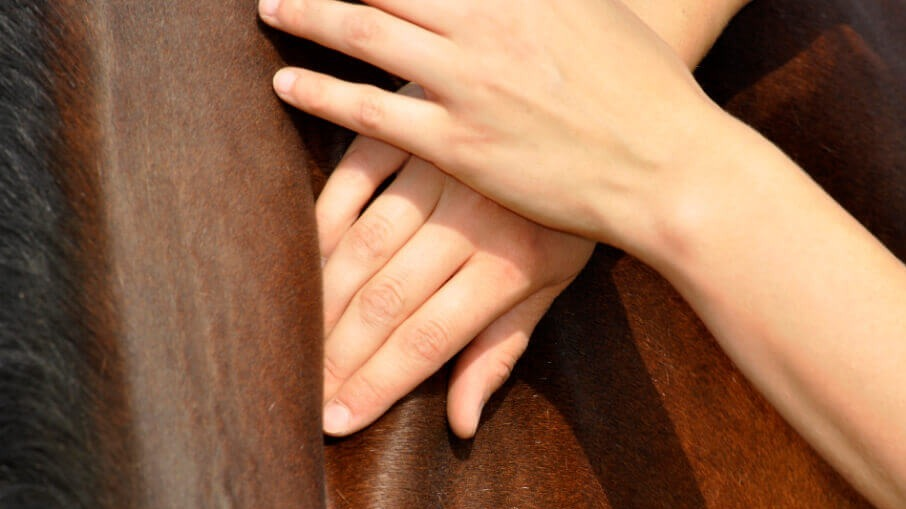
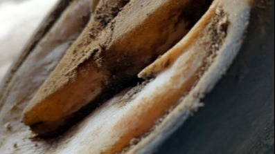
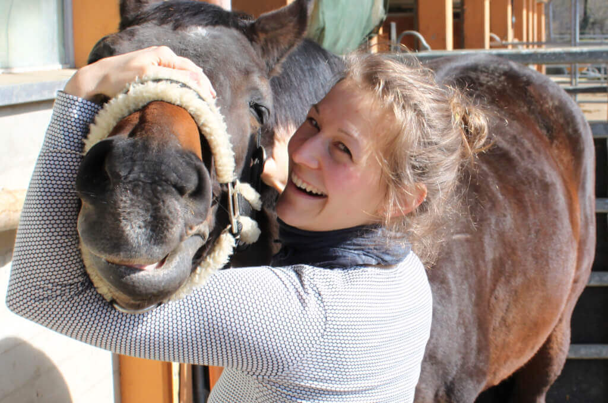

Meine Fachgebiete, Physiotherapie und Huforthopädie, ermöglichen mir einen ganzheitlichen Blick auf den Körper und seine Regulationsmechanismen.
Daher begleite ich Pferde und ihre Menschen mit dem Ziel, beiden zukunftswirksames Können für eine langfristige Gesunderhaltung mit auf den Weg zu geben.
Made with Mobirise - Try here